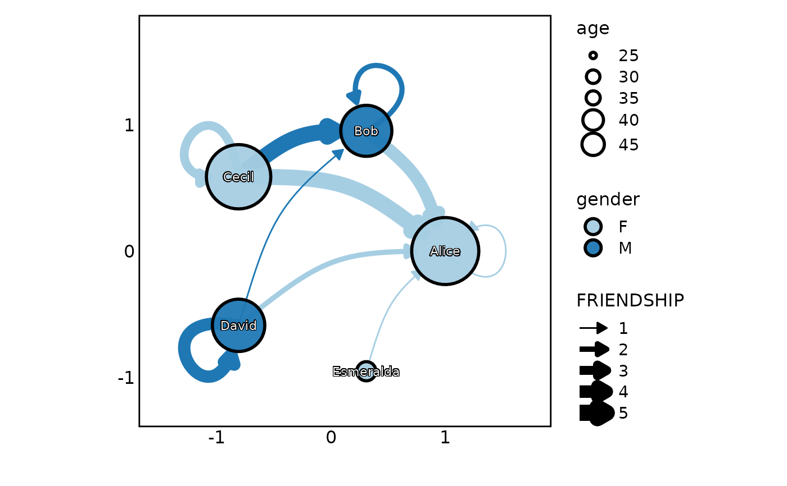

Plot a network graph
Usage
Network(
links,
nodes = NULL,
split_by = NULL,
split_by_sep = "_",
split_nodes = FALSE,
from = NULL,
from_sep = "_",
to = NULL,
to_sep = "_",
node_by = NULL,
node_by_sep = "_",
link_weight_by = 2,
link_weight_name = NULL,
link_type_by = "solid",
link_type_name = NULL,
node_size_by = 15,
node_size_name = NULL,
node_color_by = "black",
node_color_name = NULL,
node_shape_by = 21,
node_shape_name = NULL,
node_fill_by = "grey20",
node_fill_name = NULL,
link_alpha = 1,
node_alpha = 0.95,
node_stroke = 1.5,
cluster_scale = c("fill", "color", "shape"),
node_size_range = c(5, 20),
link_weight_range = c(0.5, 5),
link_arrow_offset = 20,
link_curvature = 0,
link_color_by = "from",
link_color_name = NULL,
palette = "Paired",
palcolor = NULL,
link_palette = ifelse(link_color_by %in% c("from", "to"), palette, "Set1"),
link_palcolor = if (link_color_by %in% c("from", "to")) palcolor else NULL,
directed = TRUE,
layout = "circle",
cluster = "none",
add_mark = FALSE,
mark_expand = ggplot2::unit(10, "mm"),
mark_type = c("hull", "ellipse", "rect", "circle"),
mark_alpha = 0.1,
mark_linetype = 1,
add_label = TRUE,
label_size = 3,
label_fg = "white",
label_bg = "black",
label_bg_r = 0.1,
arrow = ggplot2::arrow(type = "closed", length = ggplot2::unit(0.1, "inches")),
title = NULL,
subtitle = NULL,
xlab = NULL,
ylab = NULL,
aspect.ratio = 1,
theme = "theme_this",
theme_args = list(),
legend.position = "right",
legend.direction = "vertical",
seed = 8525,
combine = TRUE,
nrow = NULL,
ncol = NULL,
byrow = TRUE,
axes = NULL,
axis_titles = axes,
guides = NULL,
design = NULL,
...
)Arguments
- links
A data frame containing the links between nodes.
- nodes
A data frame containing the nodes. This is optional. The names of the nodes are extracted from the links data frame. If
"@nodes"is provided, the nodes data frame will be extracted from the attributenodesof the links data frame.- split_by
The column(s) to split data by and plot separately.
- split_by_sep
The separator for multiple split_by columns. See
split_by- split_nodes
A logical value specifying whether to split the nodes data. If TRUE, the nodes data will also be split by the
split_bycolumn.- from
A character string specifying the column name of the links data frame for the source nodes. Default is the first column of the links data frame.
- from_sep
A character string to concatenate the columns in
from, if multiple columns are provided.- to
A character string specifying the column name of the links data frame for the target nodes. Default is the second column of the links data frame.
- to_sep
A character string to concatenate the columns in
to, if multiple columns are provided.- node_by
A character string specifying the column name of the nodes data frame for the node names. Default is the first column of the nodes data frame.
- node_by_sep
A character string to concatenate the columns in
node_by, if multiple columns are provided.- link_weight_by
A numeric value or a character string specifying the column name of the links data frame for the link weight. If a numeric value is provided, all links will have the same weight. This determines the width of the links.
- link_weight_name
A character string specifying the name of the link weight in the legend.
- link_type_by
A character string specifying the type of the links. This can be "solid", "dashed", "dotted", or a column name from the links data frame. It has higher priority when it is a column name.
- link_type_name
A character string specifying the name of the link type in the legend.
- node_size_by
A numeric value or a character string specifying the column name of the nodes data frame for the node size. If a numeric value is provided, all nodes will have the same size.
- node_size_name
A character string specifying the name of the node size in the legend.
- node_color_by
A character string specifying the color of the nodes. This can be a color name, a hex code, or a column name from the nodes data frame. It has higher priority when it is a column name.
- node_color_name
A character string specifying the name of the node color in the legend.
- node_shape_by
A numeric value or a character string specifying the column name of the nodes data frame for the node shape. If a numeric value is provided, all nodes will have the same shape.
- node_shape_name
A character string specifying the name of the node shape in the legend.
- node_fill_by
A character string specifying the fill color of the nodes. This can be a color name, a hex code, or a column name from the nodes data frame. It has higher priority when it is a column name.
- node_fill_name
A character string specifying the name of the node fill in the legend.
- link_alpha
A numeric value specifying the transparency of the links.
- node_alpha
A numeric value specifying the transparency of the nodes. It only works when the nodes are filled.
- node_stroke
A numeric value specifying the stroke of the nodes.
- cluster_scale
A character string specifying how to scale the clusters. It can be "fill", "color", or "shape".
- node_size_range
A numeric vector specifying the range of the node size.
- link_weight_range
A numeric vector specifying the range of the link weight.
- link_arrow_offset
A numeric value specifying the offset of the link arrows. So that they won't overlap with the nodes.
- link_curvature
A numeric value specifying the curvature of the links.
- link_color_by
A character string specifying the colors of the link. It can be:
"from" means the color of the link is determined by the source node.
"to" means the color of the link is determined by the target node.
Otherwise, the color of the link is determined by the column name from the links data frame.
- link_color_name
A character string specifying the name of the link color in the legend. Only used when
link_color_byis a column name.- palette
A character string specifying the palette to use. A named list or vector can be used to specify the palettes for different
split_byvalues.- palcolor
A character string specifying the color to use in the palette. A named list can be used to specify the colors for different
split_byvalues. If some values are missing, the values from the palette will be used (palcolor will be NULL for those values).- link_palette
A character string specifying the palette of the links. When
link_color_byis "from" or "to", the palette of the links defaults to the palette of the nodes.- link_palcolor
A character vector specifying the colors of the link palette. When
link_color_byis "from" or "to", the colors of the link palette defaults to the colors of the node palette.- directed
A logical value specifying whether the graph is directed.
- layout
A character string specifying the layout of the graph. It can be "circle", "tree", "grid", or a layout function from igraph.
- cluster
A character string specifying the clustering method. It can be "none", "fast_greedy", "walktrap", "edge_betweenness", "infomap", or a clustering function from igraph.
- add_mark
A logical value specifying whether to add mark for the clusters to the plot.
- mark_expand
A unit value specifying the expansion of the mark.
- mark_type
A character string specifying the type of the mark. It can be "hull", "ellipse", "rect", "circle", or a mark function from ggforce.
- mark_alpha
A numeric value specifying the transparency of the mark.
- mark_linetype
A numeric value specifying the line type of the mark.
- add_label
A logical value specifying whether to add label to the nodes to the plot.
- label_size
A numeric value specifying the size of the label.
- label_fg
A character string specifying the foreground color of the label.
- label_bg
A character string specifying the background color of the label.
- label_bg_r
A numeric value specifying the background ratio of the label.
- arrow
An arrow object for the links.
- title
A character string specifying the title of the plot. A function can be used to generate the title based on the default title. This is useful when split_by is used and the title needs to be dynamic.
- subtitle
A character string specifying the subtitle of the plot.
- xlab
A character string specifying the x-axis label.
- ylab
A character string specifying the y-axis label.
- aspect.ratio
A numeric value specifying the aspect ratio of the plot.
- theme
A character string or a theme class (i.e. ggplot2::theme_classic) specifying the theme to use. Default is "theme_this".
- theme_args
A list of arguments to pass to the theme function.
- legend.position
A character string specifying the position of the legend. if
waiver(), for single groups, the legend will be "none", otherwise "right".- legend.direction
A character string specifying the direction of the legend.
- seed
The random seed to use. Default is 8525.
- combine
Whether to combine the plots into one when facet is FALSE. Default is TRUE.
- nrow
A numeric value specifying the number of rows in the facet.
- ncol
A numeric value specifying the number of columns in the facet.
- byrow
A logical value indicating whether to fill the plots by row.
- axes
A string specifying how axes should be treated. Passed to
patchwork::wrap_plots(). Only relevant whensplit_byis used andcombineis TRUE. Options are:'keep' will retain all axes in individual plots.
'collect' will remove duplicated axes when placed in the same run of rows or columns of the layout.
'collect_x' and 'collect_y' will remove duplicated x-axes in the columns or duplicated y-axes in the rows respectively.
- axis_titles
A string specifying how axis titltes should be treated. Passed to
patchwork::wrap_plots(). Only relevant whensplit_byis used andcombineis TRUE. Options are:'keep' will retain all axis titles in individual plots.
'collect' will remove duplicated titles in one direction and merge titles in the opposite direction.
'collect_x' and 'collect_y' control this for x-axis titles and y-axis titles respectively.
- guides
A string specifying how guides should be treated in the layout. Passed to
patchwork::wrap_plots(). Only relevant whensplit_byis used andcombineis TRUE. Options are:'collect' will collect guides below to the given nesting level, removing duplicates.
'keep' will stop collection at this level and let guides be placed alongside their plot.
'auto' will allow guides to be collected if a upper level tries, but place them alongside the plot if not.
- design
Specification of the location of areas in the layout, passed to
patchwork::wrap_plots(). Only relevant whensplit_byis used andcombineis TRUE. When specified,nrow,ncol, andbyroware ignored. Seepatchwork::wrap_plots()for more details.- ...
Additional arguments.
Examples
# \donttest{
actors <- data.frame(
name = c("Alice", "Bob", "Cecil", "David", "Esmeralda"),
age = c(48, 33, 45, 34, 21),
shape = c(21, 22, 21, 22, 23),
gender = c("F", "M", "F", "M", "F")
)
relations <- data.frame(
from = c("Bob", "Cecil", "Cecil", "David", "David", "Esmeralda", "Bob", "Alice",
"Cecil", "David"),
to = c("Alice", "Bob", "Alice", "Alice", "Bob", "Alice", "Bob", "Alice", "Cecil",
"David"),
friendship = c(4, 5, 5, 2, 1, 1, 2, 1, 3, 4),
type = c(1, 1, 1, 1, 1, 2, 2, 2, 2, 2)
)
Network(relations, actors)
Network(relations, actors, theme = "theme_blank", theme_args = list(add_coord = FALSE))
Network(relations, actors, link_weight_by = "friendship", node_size_by = "age",
link_weight_name = "FRIENDSHIP", node_fill_by = "gender", link_color_by = "to",
link_type_by = "type", node_color_by = "black", layout = "circle", link_curvature = 0.2)

Network(relations, actors, layout = "tree", directed = FALSE, cluster = "fast_greedy",
add_mark = TRUE)
Network(relations, actors, split_by = "type")
# }